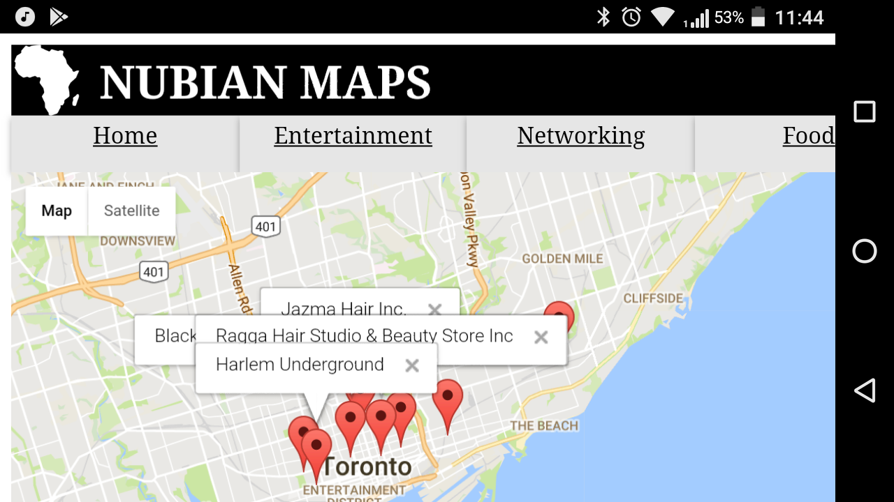
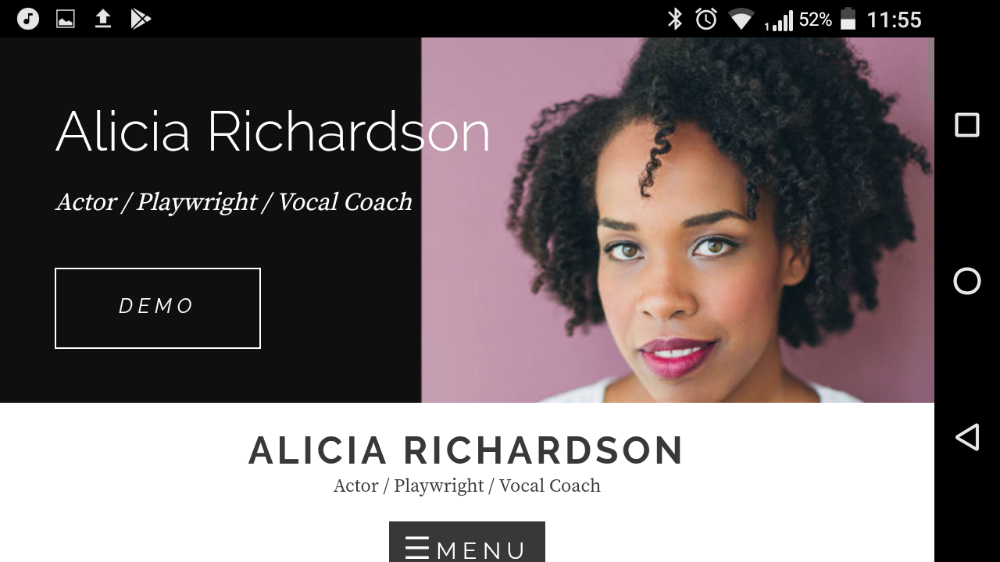

<!DOCTYPE html>
<html>
    <head>
        <!-- allows media query based on screen pxs instead of virtual viewport-->
        <meta name="viewport" content="width=device-width, initial-scale=1">
        <link rel ="stylesheet" href="static/css/desktop.css">
        <link rel="stylesheet" media="screen and (max-width: 500px)" href="static/css/mobile.css">
    </head>
</html> 
<body>
    <div id="homeDiv">
        <header><h1>( )<span id="grey">=>{</span > Jordy Kieto <span id="grey">}</span></h1></header>
        <div id="headerText"=></div>
        <br/>
        <nav id="navbar">
            <a href="https://github.com/JordyKieto" class="navLink"></a>
            <a href="https://www.linkedin.com/in/jordy-kieto/" class="navLink"></a>
            <a href="/RESUME.pdf" class="navLink"></a>
        </nav>
         
        </img>
        <div id="portfolioHeader" id="navLink"></div>
        
    </div>
        <div id="portfolio">
                <article class="portfolioItem">
                        
                            <a class="portfolioTitle" href="HTTPS://JORDYKIETO.CA/">About Me</a>
                            <div class="portfolioText">
                            Hi, my name is Jordy, and I'm a Toronto based web developer. 
                            I’ve spent countless nights creating RESTful API’s and then parsing that JSON into a pleasant, 
                            intuitive Front-End user experience. Web applications have become the new conduits for travel, commerce, 
                            and communication. I want to design applications that connect humans.
                        </img>
                    </div>
                    </article>
            <article class="portfolioItem">
                
                    <a class="portfolioTitle" href="HTTPS://NUBIAN-MAPS.HEROKUAPP.COM/">Nubian Maps</a>
                    <div class="portfolioText">
                            App enables users to save and share their favorite businesses within the Toronto Black community. Utilized full stack JavaScript(Node.js). Map’s API wrapped around a React component that populates from an Express server that uses a Mongo database. 
                            <hr>
                            <br></br>
                            <li>Node.js</li>
                            <li>Express.js</li>
                            <li>React.js</li>
                            <li>MongoDB</li>
                            <br></br>
                            <a href="https://github.com/JordyKieto/NubianMaps">source code</a>
                </img>
            </div>
            </article>
            <article class="portfolioItem">
                
                <a class="portfolioTitle" href="HTTP://ALICIADRICHARDSON.COM/">Actors Website</a>
                <div class="portfolioText">
                        Creating website according to needs of client. Explaining in laymen to client how to navigate the CMS. Extensive time and focus on positioning and designing UI elements. Maintaining the site in case of technical issues.
                        <hr>
                        <br></br>
                        <li>WordPress</li>
                        <li>HTML</li>
                        <li>CSS</li>
                    </div>
                    
            </div>
    </article>
    <script type="text/javascript" src="/App.js"></script>
</body>